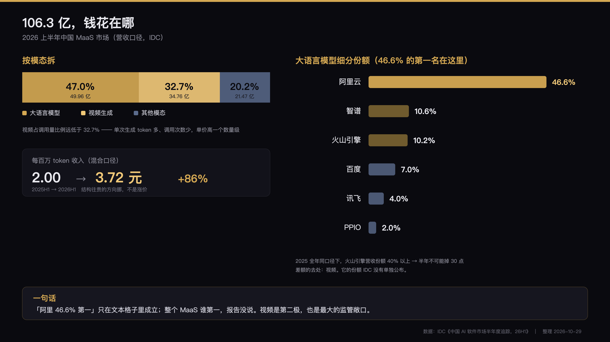

10 月 28 号所有媒体的标题都是「阿里云 46.6% 第一」。这个数字没错，但它前面挂着两个定语被标题吃掉了——「大语言模型」和「营收口径」。而报告里真正的变化，是另一个没进标题的数字：32.7%。
10 月 28 号，IDC 发了《中国 AI 软件市场半年度追踪，26H1》。第二天所有媒体的标题都长一个样：「阿里云占中国大语言模型 MaaS 市场份额 46.6%，位居第一」。
这个数字没错。但它前面挂着两个定语，被标题吃掉了——「大语言模型」和「营收口径」。
而报告里真正的变化，是另一个没进标题的数字：视频生成模型已经占 MaaS 收入的三分之一。
2026 年上半年，中国 MaaS 市场规模 106.3 亿元，同比增长 889.4%。
一年扩张 9.9 倍。听起来是爆发。
但同一份报告还有另一个口径：调用量 2,857.9 万亿 tokens，同比增长 432.5%，5.3 倍。
营收 涨 9.9 倍
调用量 涨 5.3 倍营收涨得比调用量快。
换算成单价：2026H1 每百万 token 收入 3.72 元，2025H1 是 2.00 元。涨了 86%。
IDC 这份报告第一次把 MaaS 按模态拆开了：
大语言模型 47.0%
视频生成 32.7%
其他模态 20.2%折算成钱（106.3 亿 × 占比）：
文本 49.96 亿
视频 34.76 亿
其他 21.47 亿视频半年 34.8 亿。
拿个参照物：2026 年中国电影票房全年大概 370–400 亿。一个模型模态的半年 API 收入，已经是整个电影大盘的一成。
而且视频在调用量里的占比远低于 32.7%。视频生成一次是几万 token 起，但企业调用次数比文本少几个数量级。占调用量一小块、占收入三分之一——说明视频的单价是文本的一个数量级。
这也正好解释了上一节那道算术：结构往贵的方向挪，混合单价自然涨。

IDC 点名的技术拐点是 Seedance 2.0——15 秒视频的可用率大幅提升，短剧、广告、电商内容开始批量引入。
这条线我上个月写过：红果把短剧做成了有预算的生意。内容行业一旦有预算，模型侧的收入就是确定的。视频 MaaS 的 34.8 亿，本质是短剧、广告、电商三家把「试一下」变成了「按月付」。
标题里的 46.6%，是大语言模型细分市场的份额。IDC 把模态分开算了，所以这是「文本格子里」的第一名。
阿里云 46.6% ≈ 23.3 亿
智谱 10.6% ≈ 5.3 亿
火山引擎 10.2% ≈ 5.1 亿
百度 7% ≈ 3.5 亿
讯飞 4% ≈ 2.0 亿
PPIO 2% ≈ 1.0 亿那整个 MaaS 盘子谁第一？报告没给完整份额，只写「火山引擎、阿里巴巴、智谱、百度等取得优势与主要市场份额」。
这里有个必须对齐的矛盾：
2025 年全年，IDC 营收口径下，火山引擎占 40% 以上。（调用量口径 49.5%）
2026H1，火山引擎在大语言模型细分里只有 10.2%。
半年掉 30 个点，不可能。唯一的解释是：火山的收入大头不在文本，在视频。
按 34.76 亿的视频盘子倒推：火山只要拿到一半，就是 17.4 亿，加上文本的 5.1 亿，约 22.5 亿——和阿里（文本 23.3 亿 + 自己的视频份额）已经在同一个量级。
「阿里第一」这句话，只在文本这个格子里成立。整个 MaaS 谁第一，报告没说，我也算不准。
这里要拆一个逻辑：自研芯片是降成本，不是涨收入。它保护的是毛利，不是份额。份额的直接来源是百炼平台上的企业客户，和 Qwen 的生态位。芯片是在后面托着，让价格战打得下去。
文本只有 10.2%，但如果视频份额真的高，整体体量仍是第一梯队。代价是：视频的需求天花板由内容行业决定，不由 IT 预算决定。IT 预算是年度的、可预测的；内容预算是项目制的、跟着爆款走的。
一个没有云的公司，在文本 MaaS 里做到第二，压过火山和百度。
这说明在这个细分里，模型能力可以直接换份额，云不是必要条件。过去两年行业默认「模型是云的引流品」，智谱这个数字是个反例。
文本 7%。它的主场其实在另一张表——私有化部署 28.8 亿，同比 +108.4%。那部分客户要的是数据不出域、信创适配、长期运维，而不是 API 便宜。
第六，2%，唯一上榜的独立 MaaS 服务商。日 token 3.4 万亿，同比近 20 倍；200+ 款模型；靠模型调度和推理优化吃饭。
它证明了一件事：「卖 token」这层生意，可以从云厂商身上剥出来单干。只要你的调度比客户自己调更便宜。
公有云 MaaS 106.3 亿 +889.4%
私有化部署 28.8 亿 +108.4%公有云是私有化的 3.7 倍，增速是 8 倍。
「信创 / 私有化才是中国 AI 主战场」这个说法，在营收上不成立。它是一块真实、稳定、增速平缓的市场——不是增长引擎，是基本盘。
真正的增长，在公有云的 API 账单里。
46.6% 是营收份额，不是利润份额。
MaaS 的毛利取决于推理成本和算力自有率。阿里把芯片、超节点、云都自己做了，理论上毛利空间最大；但这三样全是重资产，capex 会先吃掉利润，再谈份额。
IDC 自己的话是：「短期看模型能力与推理效率，长期看算力——获取规模、单位成本、异构适配能力与供应链确定性。」
翻译一下：这是一场资本开支的耐力赛，不是模型的短跑。谁的钱能撑到推理成本降到拐点以下，谁才拿得到利润。
32.7% 的收入来自视频，而视频的需求方是短剧、广告、电商内容——三个都受监管和平台政策影响的行业。
国内短剧已经在经历备案和内容审核的收紧。这条线一旦再紧一档，三分之一的 MaaS 收入会跟着晃。
一个市场的三分之一收入，押在内容监管的松紧上，这件事本身值得警惕。
IDC 在报告结尾明说：海外对高性价比推理需求旺盛、订阅付费习惯成熟、API 定价与毛利空间普遍高于国内。
国内打到最后是毛利战，海外还停在价格战之前。这解释了为什么 2026 下半年所有头部厂商都在讲出海——不是讲故事，是讲毛利。
1. 火山视频份额 50% 是我拍的。一点公开依据都没有。如果实际只有 30%，那阿里整体也是第一，我这节的推论就废了。
2. 单位 token 收入 +86% 是混合口径。里面含视频和其他模态，文本单价大概率是跌的。我用它反驳「价格战」叙事，严格讲不严谨——准确的说法是「混合单价上升，因为结构变了，不是价格涨了」。这个区别很重要，别拿我这句去证明「token 涨价了」。
3. 全年数字对不上。IDC 在 2026 年 5 月的年报里预测 2026 全年 MaaS 约 186 亿；现在半年就做了 106.3 亿。两个数不兼容——要么下半年大幅减速，要么口径有差。我没查到原因，只能标在这里。
这份报告最值得记住的不是 46.6%。
是那个 32.7%。
它说明中国 MaaS 的增长，已经不再只靠「把文本 token 卖得更便宜」，而是开始靠「卖更贵的东西」。
一个行业开始卖更贵的东西，通常意味着它开始真的有人用了。「便宜」能换来调用量，「贵」只能换来真实的生产需求。前者是拉新，后者才是收入。
数据来源：IDC《中国 AI 软件市场半年度追踪，26H1》（2026-10-28 发布）；智通财经 / 格隆汇 / 新浪财经转载；IDC 中国 MaaS 市场 2025 年度追踪报告。文中标注「推算」的部分为个人估算，不属 IDC 结论。